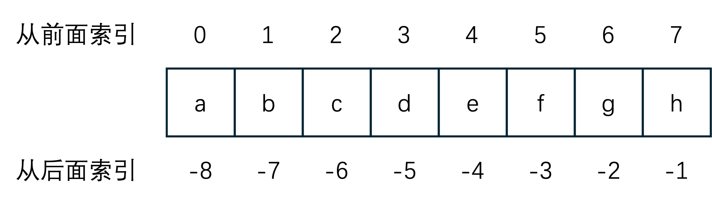

字符串
字符串或串String是由数字、字母、各种特殊字符组成的一串字符。一般记为 s="a1a2···an"(n>=0)。它是编程语言中表示文本的数据类型。在程序设计中，字符串为符号或数值的一个连续序列，如符号串（一串字符）或二进制数字串（一串二进制数字）。
Python中的字符串是一种非常重要且灵活的数据类型，它用于表示文本信息，并且在Python编程中被广泛使用。字符串在Python中被视为不可变的序列，这意味着一旦创建了字符串，就不能再对其进行修改。
字符串的基本特性
-
不可变性: 字符串一旦创建，就不能被修改。可以创建新的字符串来实现修改的效果。
-
序列性: 字符串是一个由字符组成的序列，可以通过索引和切片来访问字符串中的字符或子串。
-
Unicode支持:
Python的字符串是Unicode字符串，支持多种语言的字符集，因此可以处理各种语言的文本。
字符串的编码
字符串的编码是将字符转换为字节序列的过程，Python 中常用的编码方式包括 ASCII、UTF-8、UTF-16 等。在 Python 中，字符串默认使用 Unicode 编码。
-
ASCII编码: 最早的字符编码方式，只能表示英文字母、数字和一些特殊字符，使用7位字节表示一个字符。 -
UTF-8编码:Unicode的一种实现方式，是一种变长编码，能够表示全球范围内的字符集，并且节省存储空间。 -
UTF-16编码:Unicode的另一种实现方式，使用16位字节表示一个字符，适用于需要大量使用非ASCII字符的情况。
在Python中，你可以使用encode()方法将字符串编码为字节序列，使用decode()方法将字节序列解码为字符串。
基本操作
构造字符串
在Python中，以引号包围的内容均可认为是字符串：
>>> s = "jfdlasjlfewoi23u8ro23uokl"
>>> s1 = 'r32oodsalhf8oweohesalhfla'
>>> s2 = '''abcdefg
hijklmn
'''
索引和切片
索引
可以把索引理解成每个字符在字符串中的位置，只是从前面索引时，索引值是从0开始，比如a在字符串abcdefgh中的索引值为0， 从后面索引时，索引值从-1开始，索引的操作符为[]。

>>> s = 'abcdefgh'
>>> s[0]
'a'
切片
在Python中，切片（slice）是一种从序列（如列表、元组、字符串等）中获取子序列的方法。切片允许你通过指定起始索引、终止索引和步长来选择序列中的一部分元素，并将它们返回为一个新的序列。
切片的语法为
sequence[start:stop:step]
在执行切片时，Python遵循的是数学里区间的左闭右开原则，即[start, stop), 也就是说stop索引位置的元素是取不到的。
start为切片的起始索引，即从哪个索引开始切片;stop为切片的终止索引，但是切不到这个索引位置，只到它之前结束;step为步长，即切片时间隔多少个元素，默认为1。
正向切片时，stop的值要大于start的值，并且步长step要必须为正数，否则切片结果为一个空列表[]。
>>> s = "abcdefghijklmn"
>>> s[1:4]
'bcd'
>>> s[0:9:2]
'acegi'
反向切片时，stop的值要小于start的值，并且步长step要必须为负数，否则切片结果为一个空列表[]。
>>> s = "abcdefghijklmn"
>>> s[-3:-9:-1]
'lkjihg'
start和stop也可以省略不写。
>>> s = "abcdefghijklmn"
>>> s[:8:]
'abcdefg'
>>> s[8:]
'hijklmn'
>>> s[::-1]
'nmlkjihgfedcba'
成员运算
成员运算就是要判断某一个元素是否存在于一个数据结构中， 所用到的运算符为in和not in；成员运算返回的结果为bool型的数据，即True和False：
>>> s = "hello, world"
>>> 'h' in s
True
>>> 'Hello' in s
False
>>> 'a' not in s
True
由于成员运算返回的结果为bool数据，所以可以用在条件语句和循环语句中：
if __name__ == '__main__':
s = "abcdefg"
if 'a' in s:
print(s)
或：
if __name__ == '__main__':
s = 'abcdefg'
sub = input("Please input a sub string:")
while sub in s:
sub = input("Please input a sub string:")
s = s + sub
删除字符串
Python中只能完全删除字符串。
>>> del s
>>> print(s)
Traceback (most recent call last):
File "<pyshell#0>", line 1, in <module>
print(s)
NameError: name 's' is not defined
格式化
%格式化，使用%运算符和格式化字符来格式化字符串。
>>> name = "Alice"
>>>> age = 30
>>> result = "My name is %s and I am %d years old." % (name, age)
My name is Alice and I am 30 years old.
str.format(),是用来格式化字符串里的内容的方法。
>>> "My name is {}, I am {}.".format("Chris",36)
'My name is Chris, I am 36.'
>>> "I have {0} pens, all are {1}".format(10, "black")
'I have 10 pens, all are black'
>>> "I have {1} pens, all are {0}".format(10, "black")
'I have black pens, all are 10'
>>> "I am living in {city}, but I was born in {addr}".format("Shanghai", "Jiangsu")
Traceback (most recent call last):
File "<pyshell#50>", line 1, in <module>
"I am living in {city}, but I was born in {addr}".format("Shanghai", "Jiangsu")
KeyError: 'city'
>>> "I am living in {city}, but I was born in {addr}".format(city="Shanghai", addr="Jiangsu")
'I am living in Shanghai, but I was born in Jiangsu'
f-string, 使用f-string来格式化字符串。
>>> name = "Charlie"
>>> age = 20
>>> result = f"My name is {name} and I am {age} years old."
My name is Charlie and I am 20 years old.
遍历字符串
用for循环可以对那些可迭代的对象进行遍历，主要有两种方式：
索引遍历
s = "abcdefg"
for j in range(len(s)):
print(s[j])
for i in s:
print(i)
这种方式通过索引来访问字符串中的元素。j 在每次循环中都被赋值为字符串的下一个索引，然后使用这个索引来从字符串中获取元素。
直接遍历
s = "ABCDEFG"
for i in s:
print(i)
这种方式直接遍历字符串中的每一个元素。i 在每次循环中都会被赋值为字符串 s 的下一个元素。这种方式效率比索引遍历要高。
函数
在学习函数之前，首先要对函数有一个初步的认识。首先要知道的是Python中函数都是独立的代码块，可以重复调用，用来执行特定的任务或实现特定的功能。我们可以将函数比作一口做饭的大锅cooker，它可以用来炖母鸡hen，需要通过函数名和参数列表来调用：
>>> cooker(hen)
"Chicken Soup"
以下为列表中的三个函数为字符串中经常会使用的函数。
| 名字 | 说明 |
|---|---|
len | 有返回值，返回字符串的长度 |
min | 有返回值，返回字符串中最小的字符 |
max | 有返回值，返回字符串中最大的字符 |
len(string)
len返回字符串string的长度，即元素的个数。
>>> len("abcdefg")
7
max(string)/min(string)
max和min分别返回string的中最大和最小的元素，元素的大小以字符在字符集中的位置来判定。
>>> max("ABCDEFG")
'G'
>>> min("abCDEFG")
'C'
方法
在Python中，方法是要关联在对象中的，需要在一个类的内部定义，去操作对象的属性或者执行对象的特定的功能，所谓的对象可以理解成一个实际的事物，如一只母鸡（母鸡属于鸡这一类）。在这一例子中，母鸡有很多的方法，比如下蛋。
在调用方法时，需要通过对象名和方法名进行，并要传入方法的参数:
>>> hen = Chicken()
>>> hen.dropegg(2)
'The hen dropped 2 eggs.'
对于Python中所有的内置数据类型，我们在创建时，它们都自动被标识成它所属类型的实例对象：
1是int整型类型的实例对象'hello'是str字符串类型的实例对象[1,2,3]是list列表类型的实例对象- ......
将这些实际的值赋值给一个变量之后，上述说法也成立。所以我们不需要通过hen = Chicken()这样的方式创建这些类型。这个内容将会在学习面向对象时详细介绍。
在调用这些实例的方法时，可以直接通过值来调用，也可以在赋值给变量后，通过变量来调用：
>>> "hello".upper()
'HELLO'
>>> s = "WORLD"
>>> s.lower()
'world'
下面我们将对字符串中常用的方法进行学习。
查找与替换
| 方法 | 说明 |
|---|---|
count | 统计子串在字符串中出现的次数 |
find、index | 查找子串在字符串中的位置 |
replace | 替换字符串中的子串 |
count(sub[, start[, end]])
count函数可以查找在[start:end]切片之间，子串sub出现的次数，如果未指定范围则在整个字符串范围内查找。
>>> s = "My name is Chris, I am 6 years old, I will go to Primary School this September."
>>> s.count('I')
2
find(sub[, start[, end]]) / index(sub[, start[, end]])
find返回子字符串sub在[start:end]切片内被找到的最小索引。 如果sub未被找到则返回-1。index返回子字符串sub在[start:end]切片内被找到的最小索引。 如果sub未被找到则会报错ValueError。
>>> s = "to be or not to be, that is a question."
>>> s.find("to")
0
>>> s.index("to", 3, 20)
13
>>> s.find("I")
-1
>>> s.index("I")
Traceback (most recent call last):
File "<pyshell#4>", line 1, in <module>
s.index("I")
ValueError: substring not found
replace(old, new[, count])
replace返回字符串的副本，其中出现的所有子字符串old都将被替换为new。 如果给出了可选参数count，则只替换前count次出现；并不会改变原来的字符串。
>>> s = "My name is Chris."
>>> s.replace("Chris", "Eris")
'My name is Eris.'
>>> print(s)
'My name is Chris.'
分割和连接
| 方法 | 说明 |
|---|---|
split | 将字符串分割成子串列表 |
join | 连接字符串列表成为一个字符串 |
split(sep)
split使用sep作为分隔字符串，返回一个由字符串内单词组成的列表。
>>> '1,2,3'.split(',')
['1', '2', '3']
>>> '1,2,3'.split(',', maxsplit=1)
['1', '2,3']
>>> '1,2,,3,'.split(',')
['1', '2', '', '3', '']
>>> '1<>2<>3'.split('<>')
['1', '2', '3']
join(iterable)
join返回一个由iterable中的字符串拼接而成的字符串，iterable可以为任何高级数据类型，如列表、元组等。
>>> '-'.join(['a', 'b', 'c'])
'a-b-c'
>>> ','.join("abcdefg")
'a,b,c,d,e,f,g'
大小写转换
| 方法 | 说明 |
|---|---|
lower | 将字符串中的字符全部转换成小写 |
upper | 将字符串中的字符全部转换成大写 |
>>> s = 'hello world'
>>> print(s.upper())
'HELLO WORLD'
>>> print(s.lower())
'hello world'
去除左右的子串
| 方法 | 说明 |
|---|---|
strip | 去除字符串两端的子串 |
lstrip、rstrip | 去除字符串左侧或右侧的子串 |
strip(chars)
strip将去除字符串中左右两端的所有的子串，这个子串为所有由chars中指定字符的组合，并返回去除后字符串的副本。如果未指定sub，则默认去除左右两端的空格；不会改变原来的字符串值。
>>> " good ".strip()
'good'
>>> website = 'www.google.com'
>>> website.strip('cowm.')
'google'
>>> print(website)
www.google.com
>>> comment_string = '#....... Section 3.2.1 Issue #32 .......'
>>> comment_string.strip('.#! ')
'Section 3.2.1 Issue #32'
其他常用方法
| 方法 | 说明 |
|---|---|
startswith | 判断字符串是否以指定前缀开始 |
endswith | 判断字符串是否以指定后缀结束 |
isalpha | 判断字符串是否只包含字母 |
isdigit | 判断字符串是否只包含数字 |
isalnum | 判断字符串是否只包含字母或数字 |
isspace | 判断字符串是否只包含空白字符 |
>>> s = 'hello world'
>>> print(s.startswith('hello')) # 输出: True
>>> print(s.endswith('world')) # 输出: True
>>> print(s.isalpha()) # 输出: False
>>> print(s.isdigit()) # 输出: False
>>> print(s.isalnum()) # 输出: False
>>> print(s.isspace()) # 输出: False